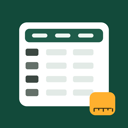
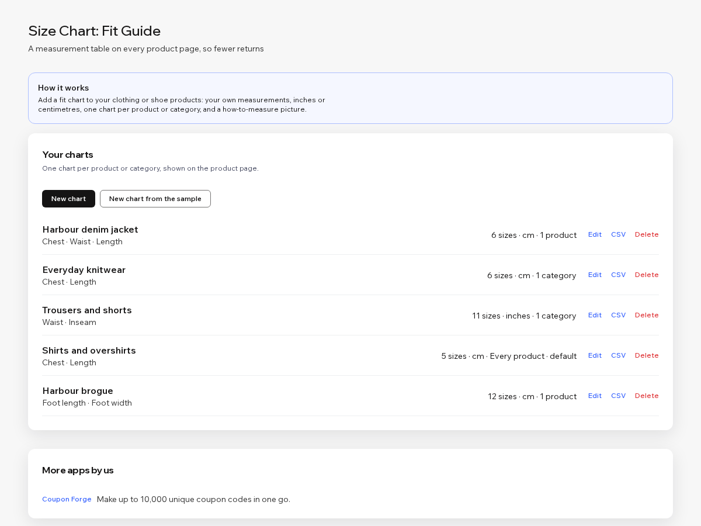

Size Chart: Fit Guide
A fit table on every product page
- Your own measurements, in cm or inches
- One chart per product or per category
- A runs-small note and a how-to-measure picture
- Import sizes from a spreadsheet (Premium)

What it does
Clothing and shoe sizes differ between brands, and shoppers cannot try anything on. A size chart on the product page answers the question that stops a sale, "which size am I?", and stops a return later. This app puts your measurements in a tidy table on every product page.
You type the chart once in the dashboard: a name, centimetres or inches, up to four measurement columns (chest, waist, length, foot length) and as many size rows as you need. Add a line such as "Runs small, size up for a jumper underneath", and a picture that shows shoppers how to measure. If the numbers are already in a spreadsheet, paste them in.
A chart per product or category means a jacket shows its own chest and length table while shoes show foot length. Products you have not assigned get the default chart.
The table follows the look of your site and stays a readable table rather than a picture, so it works on a phone. Shoppers can switch between centimetres and inches with one tap.
Free: one chart of up to eight sizes on every product, with a small credit link. Premium: many charts, a chart per product or category, the inch switch, the how-to-measure picture, spreadsheet import, and no credit link.
Price
Free
- One chart on every product page
- Up to 8 sizes in the table
- Your own measurement columns
- Small credit link under the table
Premium
$4/month, yearly 20% off ($3.20/month)
- Up to 50 charts, 40 sizes each
- A different chart for each product or category
- cm and inches switch for shoppers
- How-to-measure picture under the table
- Import a spreadsheet of measurements
- No credit link